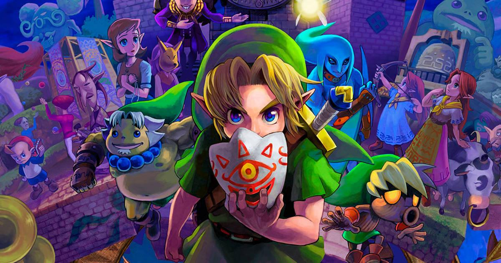

The Legend of Zelda: Majora´s Mask

The Legend of Zelda: Majora's Mask (en español: La leyenda de Zelda: La máscara de Majora), conocido en Japón como Zelda no Densetsu: Mujura no Kamen (Zeruda no Densetsu Mujura no Kamen, lit. La Leyenda de Zelda: La Máscara de Mujura), es un videojuego de acción-aventura de la serie The Legend of Zelda desarrollado por la división Entertainment Analysis and Development de Nintendo para la videoconsola Nintendo 64. Fue lanzado el 27 de abril de 2000 en Japón; el 26 de octubre de 2000 en Norteamérica; y el 17 de noviembre de 2000 en Europa. El título vendió aproximadamente 314.000 copias en Japón durante su primera semana, ha vendido tres millones de copias en todo el mundo y ha cosechado críticas muy positivas. Fue relanzado para la Nintendo GameCube como parte del recopilatorio The Legend of Zelda: Collector's Edition y en el servicio Virtual Console de Wii el 3 de abril de 2009 en la región PAL, el 7 de abril en Japón y el 18 de mayo de 2009 en Norteamérica. Una adaptación para la Nintendo 3DS, titulado The Legend of Zelda: Majora's Mask 3D, fue lanzado el 13 de febrero de 2015.
Este título requiere, en su versión para Nintendo 64, el uso del periférico Expansion Pak, que proporciona memoria adicional para lograr gráficos mejorados y un mayor número de personajes simultáneos en pantalla.
Majora's Mask es la sexta entrega de la serie The Legend of Zelda y la segunda en usar gráficos en 3D, siendo la primera su predecesor, The Legend of Zelda: Ocarina of Time. Es también el primer título con Eiji Aonuma como máximo responsable, asumiendo el papel de productor, además de repetir el de director que ya ejerció en The Legend of Zelda: Ocarina of Time.
El juego tiene lugar en Términa, una versión alternativa del emplazamiento habitual de la serie: Hyrule. Allí, un Skull Kid ha robado la «Máscara de Majora», un poderoso y antiguo artefacto. Bajo su influencia está provocando estragos entre los ciudadanos y amenaza con destruir el mundo lanzando la luna sobre éste en un corto periodo de 72 horas. El protagonista principal, Link, se embarca en una aventura a través del tiempo, reviviendo una y otra vez los tres días que tiene como plazo para evitar el cataclismo.
The Legend Of Zelda: Breath Of The Wild
 The Legend of Zelda: Breath of the Wild (Zeruda no Densetsu Buresu obu za Wairudo) es el título oficial del videojuego de acción-aventura de la serie The Legend of Zelda, desarrollado por Nintendo EPD (división de Nintendo creada por la unión de Nintendo EAD, Nintendo Software Planning & Development), en colaboración con Monolith Soft para Wii U y Nintendo Switch. Es la décimo octava entrega de la serie y la tercera en utilizar gráficos en alta definición (la primera fue The Legend of Zelda: The Wind Waker HD y la segunda es The Legend of Zelda: Twilight Princess HD). Se lanzó el 3 de marzo de 2017 para Wii U (siendo el último juego en salir para dicha consola) y Nintendo Switch.
The Legend of Zelda: Breath of the Wild (Zeruda no Densetsu Buresu obu za Wairudo) es el título oficial del videojuego de acción-aventura de la serie The Legend of Zelda, desarrollado por Nintendo EPD (división de Nintendo creada por la unión de Nintendo EAD, Nintendo Software Planning & Development), en colaboración con Monolith Soft para Wii U y Nintendo Switch. Es la décimo octava entrega de la serie y la tercera en utilizar gráficos en alta definición (la primera fue The Legend of Zelda: The Wind Waker HD y la segunda es The Legend of Zelda: Twilight Princess HD). Se lanzó el 3 de marzo de 2017 para Wii U (siendo el último juego en salir para dicha consola) y Nintendo Switch.
El juego introduce un mundo abierto en el que los usuarios serán capaces de encontrar distintos caminos o vías para llegar a un objetivo u objeto en el mapa. La idea original de la distribuidora era lanzar el juego en 2015; no obstante, en marzo de dicho año, el productor Eiji Aonuma declaró que los objetivos de la empresa habían cambiado y ya no buscaban lanzar el juego en ese año, retrasándolo para 2016. Tras unos meses sin noticia alguna del título, Nintendo anunció su retraso junto a esta hasta 2017, así como que también el juego sería presentado formalmente (revelando su título oficial) en el E3 2016 (Los Ángeles). Finalmente, el juego fue presentado a través de su respectivo tráiler en la E3, siendo este el eje central de la presentación de Nintendo.
Desde la primera presentación pública, Breath of the Wild fue recibido positivamente por la crítica. Luego de su lanzamiento, recibió gran aclamación entre crítica y los fanáticos de la franquicia. Resultó ganador de tres premios en los The Game Awards 2017, incluyendo Juego del Año. La enorme libertad jugable y la enorme interactividad que ofrecía este título lo llevaron a ser catalogado como el juego más completo de la serie, y uno de los mejores videojuegos de todos los tiempos.